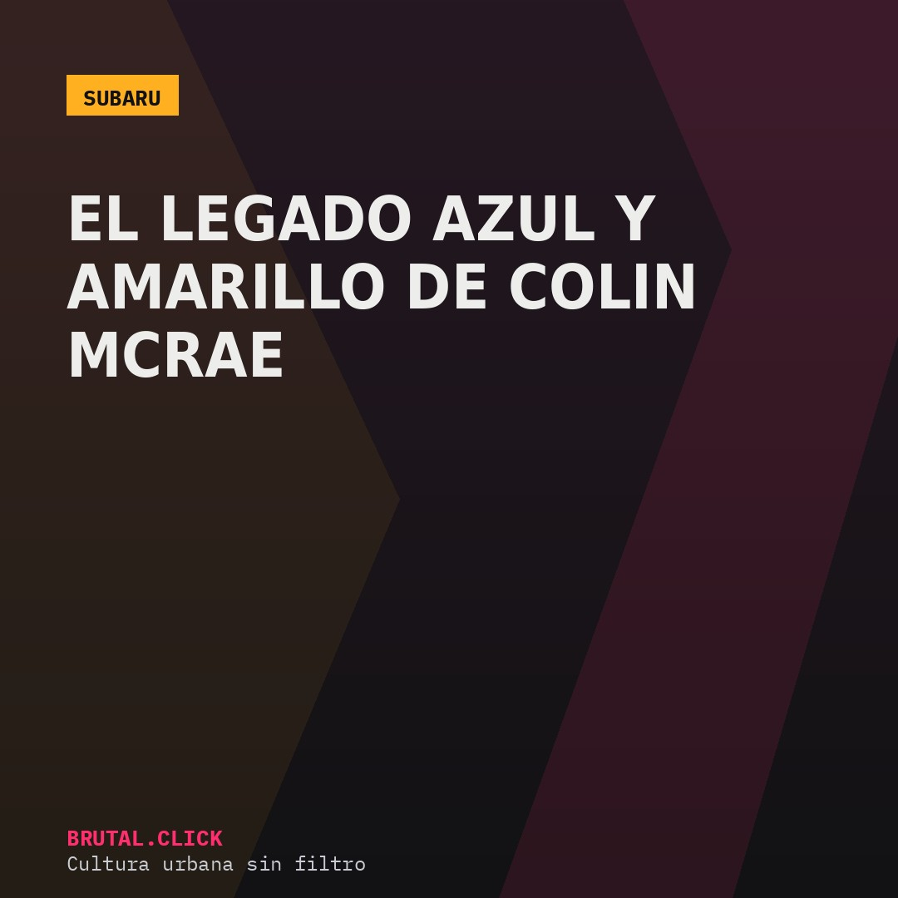
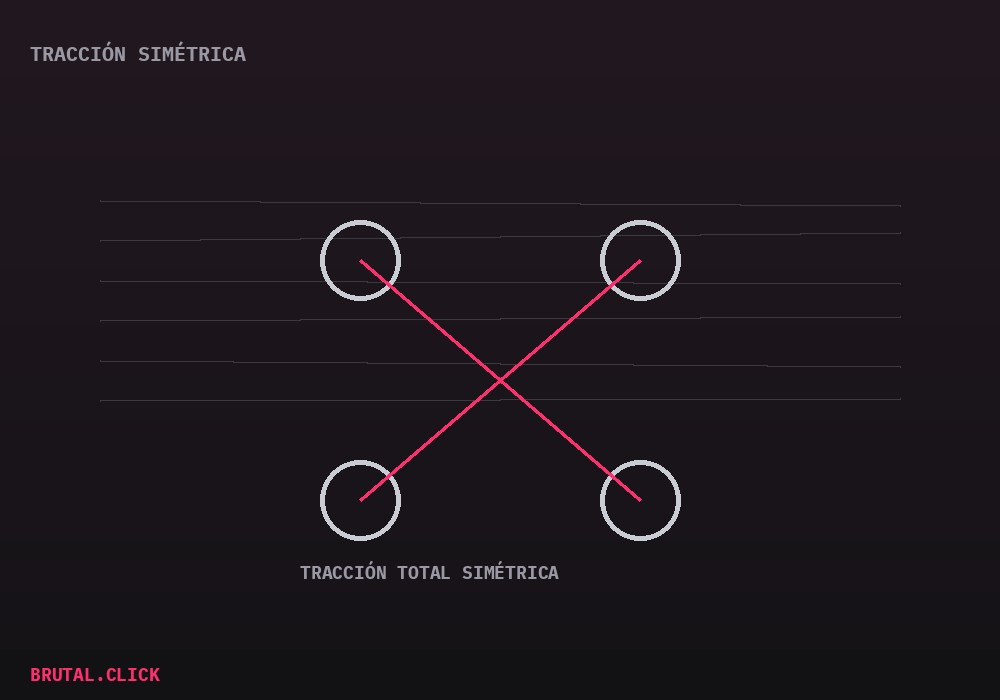

Este artículo incluye enlaces de afiliación a productos relacionados (modelos a escala, documentales). No hay comisión posible por la venta de vehículos nuevos. Si compras a través de estos enlaces, podemos recibir una pequeña comisión sin coste extra para ti.

Hay coches que se recuerdan por su palmarés y otros que se recuerdan por su imagen. El Subaru Impreza WRC, con su librea azul y amarilla de 555, consiguió las dos cosas a la vez — y gran parte de esa memoria colectiva tiene nombre propio: Colin McRae, campeón del mundo de rally en 1995 al volante de este coche.
Tracción simétrica: la firma técnica de Subaru
Lo que distingue mecánicamente al Impreza WRC de sus rivales de época es el sistema de tracción total simétrica de Subaru, combinado con un motor bóxer de cilindros opuestos que, al ir montado longitudinalmente y muy bajo, le daba un centro de gravedad especialmente favorable para las superficies sueltas típicas del rally — tierra, grava, nieve.

Esa combinación de reparto de peso y tracción a las cuatro ruedas permitía al piloto entrar en curva de forma mucho más agresiva de lo que la lógica indicaría, algo que McRae explotó hasta límites que sus propios compañeros de equipo consideraban arriesgados — y que en buena medida construyó su leyenda como piloto de estilo espectacular, más que técnicamente conservador.
Un legado que sigue vendiendo merchandising treinta años después
Pocos coches de rally de los 90 mantienen hoy el nivel de reconocimiento del Impreza 555 — su librea sigue reproduciéndose en modelos a escala, ropa y videojuegos de rally, una señal de que el vínculo entre el coche y el piloto trasciende el propio palmarés deportivo.
Modelo a escala Subaru Impreza WRC 555 1:18
La librea que marcó una generaciónDocumental/DVD: Colin McRae, la biografía
Para entender al piloto detrás del mitoEnlaces pendientes de activar el programa de afiliados.